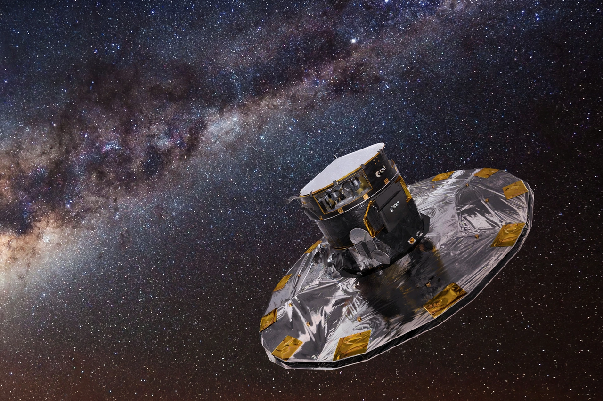

| Gaia | |
| Operator | European Space Agency (ESA) |
|---|---|
| Launch | 19 December 2013, Soyuz VS06 from Kourou |
| Orbit | Sun–Earth L2 Lagrange point |
| Mission | Astrometric survey of ~2 billion stars |
| End of observations | 15 January 2025 |
Gaia was a space observatory of the European Space Agency designed to create the largest and most precise three-dimensional map of the Milky Way. Launched in December 2013, it operated from a Lissajous orbit around the Sun–Earth L2 point, repeatedly scanning the whole sky to measure the positions, parallaxes, and motions of nearly two billion stars with micro-arcsecond accuracy.
Gaia carried two telescopes feeding a single focal plane of 106 CCDs — nearly a billion pixels — the largest camera flown in space at the time. As the spacecraft spun, star images crossed the focal plane; the astrometric field measured positions, the blue and red photometers measured color and brightness, and the radial-velocity spectrometer measured line-of-sight velocities and stellar properties for the brighter stars. Repeated observations over the mission allowed parallaxes to be derived from the apparent annual wobble of each star.
The Gaia catalogues (DR1 in 2016, DR2 in 2018, EDR3 in 2020, DR3 in 2022) have transformed astronomy: mapping the structure and merger history of the Milky Way, discovering stellar streams and a vast population of binary stars, refining the cosmic distance ladder used in the Hubble tension debate, characterizing hundreds of thousands of asteroids, and detecting exoplanets and quasars. Gaia located the remnant of the Gaia–Enceladus merger, an ancient dwarf galaxy absorbed by the Milky Way.
Gaia ceased science observations on 15 January 2025 after exhausting the cold gas used by its micro-propulsion thrusters, and was passivated and moved into a heliocentric retirement orbit in March 2025. Data processing continues, with the full DR4 and final DR5 catalogues expected in the following years.